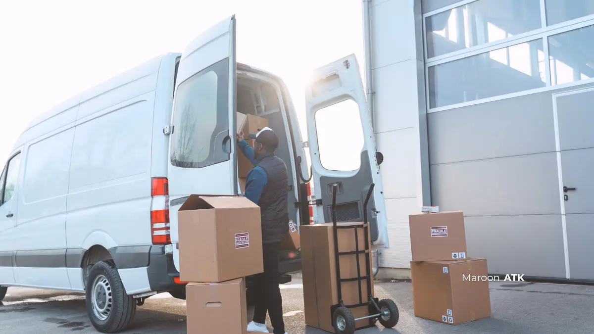

Pengadaan ATK kantor instansi yang lolos verifikasi Layanan Pengadaan Secara Elektronik (LPSE) dan Sistem Informasi Pengadaan di Sekolah (SIPLah) membutuhkan dokumen Request for Quotation (RFQ) dengan spesifikasi teknis yang jelas serta vendor yang memiliki kelengkapan legalitas resmi.
Menyusun Request for Quotation (RFQ) di lingkungan kementerian, lembaga, dinas pemerintah daerah, maupun Badan Usaha Milik Negara (BUMN) menuntut ketelitian administratif yang tinggi. Kesalahan kecil dalam penulisan rincian teknis barang sering kali membuat proses tender tertunda, memicu sanggahan peserta lelang, atau bahkan berisiko ditolak saat proses audit keuangan oleh Badan Pemeriksa Keuangan (BPK) maupun Inspektorat.
Panduan berikut membahas langkah praktis menyusun dokumen RFQ pengadaan ATK kantor yang tepat, standar verifikasi legalitas vendor penyedia, serta alur pemesanan di lima kota layanan utama MAROON ATK di seluruh Indonesia.
Bagaimana Cara Menulis Rincian Spesifikasi Teknis ATK yang Jelas?
Spesifikasi teknis ATK yang jelas harus mencantumkan jenis material, ukuran standar, gramatur (ketebalan), warna, merek referensi/setara, dan satuan kemasan secara lengkap agar tidak menimbulkan multitafsir saat proses evaluasi lelang.
Kesalahan paling umum dalam dokumen RFQ adalah menulis nama barang terlalu singkat, misalnya hanya mencantumkan "kertas HVS" tanpa detail lanjutan. Praktik ini membuka celah bagi vendor tidak bertanggung jawab untuk mengirimkan kertas bergramatur tipis yang macet di mesin fotokopi atau kertas daur ulang berderajat putih rendah.
Spesifikasi yang benar perlu mencantumkan parameter teknis secara eksplisit. Sebagai contoh standar penulisan yang baku:
- Kertas HVS Cetak: "Kertas HVS ukuran A4 (210 x 297 mm) atau F4/Folio (215 x 330 mm), gramatur 75 gsm atau 80 gsm, derajat putih minimal 95% (ISO 2470), bahan 100% serat kayu murni (virgin wood pulp), dikemas per rim (500 lembar) dan per box (5 rim) bersegel rapi."
- Toner & Tinta Printer: "Toner cartridge printer laserjet monochrome original / genuine pabrikan, kapasitas cetak minimal 1.500 halaman (standar ISO/IEC 19752), dilengkapi segel hologram keaslian dan nomor seri terdaftar."
- Ordner & Map Dokumen: "Ordner kuitansi/dokumen ukuran Folio 7 cm, bahan karton tebal berlapis PVC tahan air, dilengkapi mekanik pengunci berbahan baja anti karat dan label punggung yang dapat diganti."
- Pena & Alat Koreksi: "Ballpoint gel pen tinta hitam ukuran mata pena 0.5 mm, mekanisme cetek (retractable), pegangan karet anti licin, tinta cepat kering (anti noda smudge-proof)."
Format serupa perlu diterapkan pada seluruh item ATK lain agar Kerangka Acuan Kerja (KAK) konsisten dan mudah diverifikasi oleh Pejabat Pembuat Komitmen (PPK) maupun Pejabat Pengadaan.

Format Proposal Pengajuan Pengadaan ATK Kantor yang Benar dan Cepat Disetujui
Susun draf anggaran pengadaan ATK kantor yang rapi dengan template justifikasi biaya dan perhitungan kebutuhan riil staf.
Bagaimana Memilih Vendor Pengadaan ATK Kantor yang Memenuhi Syarat Legalitas?
Vendor pengadaan ATK kantor yang memenuhi syarat legalitas instansi pemerintah wajib memiliki Surat Penawaran Harga (SPH) resmi bermaterai, rincian spesifikasi teknis tertulis, faktur pajak elektronik (e-Faktur), dan terdaftar aktif di E-Katalog LKPP atau SIPLah.
Selain harga satuan yang kompetitif, kelengkapan dokumen pendukung menjadi faktor mutlak penentu kelayakan vendor. Pembelian instansi pemerintah tunduk pada regulasi Lembaga Kebijakan Pengadaan Barang/Jasa Pemerintah (LKPP) dan aturan perpajakan nasional.
Berikut instrumen legalitas yang harus diverifikasi sebelum menerbitkan Surat Perintah Kerja (SPK):
| Dokumen Legalitas | Fungsi Administratif | Risiko Jika Tidak Ada |
|---|---|---|
| Surat Penawaran Harga (SPH) | Dasar penentuan HPS dan komitmen harga satuan tetap selama masa kontrak | Rentan terjadi pembengkakan harga sepihak di tengah pengadaan |
| Faktur Pajak Elektronik (e-Faktur) | Bukti pemungutan dan penyetoran PPN 11% sesuai ketentuan DJP | Pelanggaran perpajakan dan risiko temuan audit BPK/Inspektorat |
| ID Produk E-Katalog / SIPLah | Instrumen transaksi resmi pengadaan langsung secara digital | Pencairan dana anggaran APBN/APBD/BOS tidak dapat diproses bendahara |
| Lembar Spesifikasi Teknis Pabrik | Validasi kesesuaian fisik barang yang dikirim dengan dokumen KAK | Barang ditolak oleh tim pemeriksa barang (PPHP/BAPB) |
MAROON ATK mendukung penuh kelengkapan seluruh dokumen administrasi tersebut sebagai bagian dari layanan pengadaan satu pintu, sehingga proses administrasi tender berjalan lancar tanpa risiko sanggahan maupun kendala pencairan dana.

Paket pengadaan ATK rutin untuk instansi pemerintah dengan sistem penjadwalan berkala, penagihan bulanan konsolidasi, dan faktur pajak resmi.
Bagaimana Solusi Cepat Menggunakan Paket Pengadaan ATK Rutin?
Paket pengadaan ATK rutin dari MAROON ATK membantu instansi menghindari penyusunan dokumen RFQ berulang setiap bulan melalui kontrak berkala, jadwal distribusi tepat waktu, dan penagihan satu pintu (consolidated invoicing).
Bagi staf purchasing atau bagian umum instansi yang harus menyusun RFQ setiap bulan atau triwulan, proses pengulangan administrasi ini sangat menguras waktu produktif. Sering kali dokumen pengadaan baru selesai diproses ketika stok kertas dan toner di gudang sudah habis terpakai (stockout).
Paket Pengadaan ATK Rutin MAROON ATK mengintegrasikan pasokan kertas HVS grosir, cartridge toner dan tinta original, ordner arsip, baterai, hingga ATK meja staf dalam satu skema pemesanan terpadu. Dengan jadwal pengiriman berkala yang disepakati di awal, tim pengadaan cukup memverifikasi Berita Acara Serah Terima (BAST) dan invoice bulanan tanpa perlu membuat dokumen tender baru setiap saat.

Standar Operasional Prosedur (SOP) Pengadaan ATK Kantor yang Efisien dan Akuntabel
Panduan alur persetujuan internal dari reorder point inventaris hingga penerimaan barang di gudang operasional.
Bagaimana Proses Pemesanan Pengadaan ATK Kantor di Jakarta?
Pemesanan pengadaan ATK kantor di Jakarta umumnya melayani kebutuhan volume besar dari kementerian, dinas, dan kantor pusat perusahaan yang berlokasi di ibu kota.
Sebagai pusat pemerintahan dan bisnis nasional, permintaan ATK di Jakarta cenderung dalam volume besar dan membutuhkan pengiriman yang konsisten setiap bulan.
MAROON ATK menyediakan layanan pengiriman terjadwal untuk instansi dan perusahaan di Jakarta agar stok ATK tetap terjaga tanpa kendala keterlambatan. Untuk kebutuhan pengadaan ATK di Jakarta, hubungi tim kami melalui WhatsApp MAROON ATK Jakarta.
Bagaimana Proses Pemesanan Pengadaan ATK Kantor di Surabaya?
Pemesanan pengadaan ATK kantor di Surabaya melayani kebutuhan instansi pemerintah daerah dan perusahaan swasta di kawasan Jawa Timur bagian utara.
Kami telah melayani berbagai instansi di Surabaya dengan kebutuhan ATK rutin maupun pengadaan sesuai jadwal anggaran tahunan. Tim MAROON ATK memastikan dokumen spesifikasi teknis dan faktur pajak selalu sesuai dengan kebutuhan verifikasi internal instansi di Surabaya.
Untuk konsultasi kebutuhan ATK di Surabaya, hubungi kami melalui WhatsApp MAROON ATK Surabaya.
Bagaimana Proses Pemesanan Pengadaan ATK Kantor di Malang?
Pemesanan pengadaan ATK kantor di Malang mencakup kebutuhan dinas pemerintah kabupaten/kota serta kampus dan sekolah yang tersebar di wilayah tersebut.
Andi Wijaya, Kepala Subbagian Umum Pemerintah Daerah Kabupaten Malang, menyampaikan bahwa MAROON ATK berhasil memenuhi kebutuhan ATK dinas dengan cepat dan administrasi yang rapi.
Pengalaman ini mencerminkan bagaimana MAROON ATK menangani kebutuhan pengadaan ATK instansi di Malang secara konsisten. Untuk kebutuhan serupa, hubungi tim kami melalui WhatsApp MAROON ATK Malang.
Bagaimana Proses Pemesanan Pengadaan ATK Kantor di Denpasar?
Pemesanan pengadaan ATK kantor di Denpasar melayani kebutuhan instansi pemerintah daerah dan sektor pariwisata yang membutuhkan dokumen administrasi lengkap.
Kami telah melayani berbagai instansi di Denpasar dengan kebutuhan ATK yang disesuaikan jadwal anggaran daerah maupun kebutuhan operasional kantor sektor pariwisata.
Kelengkapan faktur pajak dan Surat Penawaran Harga menjadi perhatian utama bagi instansi di Denpasar dalam memilih vendor ATK. Hubungi tim kami melalui WhatsApp MAROON ATK Denpasar untuk penawaran resmi.
Bagaimana Proses Pemesanan Pengadaan ATK Kantor di Makassar?
Pemesanan pengadaan ATK kantor di Makassar mencakup kebutuhan instansi pemerintah provinsi dan perusahaan swasta di kawasan Indonesia timur.
Kami telah melayani berbagai instansi di Makassar dengan dukungan dokumen legal lengkap untuk memenuhi standar administrasi pengadaan di wilayah tersebut.
MAROON ATK memastikan proses pengiriman ATK ke Makassar tetap terjadwal meski jarak distribusi dari pusat logistik relatif jauh. Untuk kebutuhan pengadaan ATK di Makassar, hubungi kami melalui WhatsApp MAROON ATK Makassar.
Menyusun dokumen RFQ pengadaan ATK kantor yang detail dan memilih vendor dengan kelengkapan legalitas resmi akan mempercepat proses verifikasi anggaran dan mengurangi risiko dokumen tertolak.
Instansi yang juga sedang mempertimbangkan digitalisasi ruang kelas dapat melihat panduan pengadaan interactive flat panel untuk sekolah dan instansi, sementara yang membutuhkan furniture pendukung ruang kerja dapat mempelajari standar material custom furniture kantor anti rayap.
Lihat katalog lengkap ATK kantor atau konsultasikan kebutuhan pengadaan ATK kantor Anda langsung bersama tim MAROON ATK.
Konsultasikan Kebutuhan Dokumen RFQ & Paket ATK Instansi Anda
Dapatkan draf spesifikasi teknis KAK, simulasi Surat Penawaran Harga (SPH) resmi, serta penawaran paket ATK rutin terintegrasi bersama tim ahli MAROON ATK.
Rangkuman Poin Penting
Penyusunan dokumen RFQ yang presisi adalah kunci keberhasilan pengadaan barang instansi pemerintah yang akuntabel, efisien, dan transparan.
- Spesifikasi Eksplisit: Selalu cantumkan jenis material, gramatur, ukuran, dan satuan kemasan secara detail untuk menghindari barang sub-standar.
- Integritas Dokumen Legal: Pastikan vendor mampu menerbitkan SPH bermaterai, e-Faktur sah, dan terdaftar resmi di E-Katalog LKPP atau SIPLah.
- Efisiensi Kontrak Rutin: Manfaatkan paket pengadaan berkala untuk menghemat waktu administrasi tender bulanan instansi.
Wujudkan tata kelola pengadaan perlengkapan kantor yang bersih dan bebas temuan bersama MAROON ATK.
Pertanyaan Yang Sering Ditanyakan
Spesifikasi ATK harus ditulis lengkap mencakup jenis, ukuran, gramatur, warna, dan satuan kemasan, bukan hanya nama umum seperti "kertas" atau "pulpen".
Vendor wajib menyediakan Surat Penawaran Harga, rincian spesifikasi teknis, faktur pajak resmi, dan pencatatan di E-Katalog untuk mendukung proses tender.
Ya, MAROON ATK menyediakan paket pengadaan ATK rutin bulanan maupun triwulan dengan jadwal pengiriman berkala dan invoice resmi.

Asher Angelica
Praktisi procurement dan kepatuhan administrasi tender instansi pemerintah yang berfokus pada standardisasi dokumen RFQ/KAK, integrasi sistem E-Katalog/SIPLah, dan efisiensi rantai pasok ATK B2B di Indonesia.